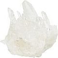

Bochechar e escovar os dentes com o açúcar xilitol
... pode parar a formação de cárie e curar periodontite/doença da gengiva
Boa parte da informação sobre o uso do pó de xilitol para o combate à cárie e cura de periodontites apresentada no sítio-web CuraDente.com, nessa e nas páginas relacionadas deve-se a um extraordinário dentista alemão, Dr Ulrich Bruhn, que realizou trabalho inovador e único nessa área e cujo infatigável compromisso em divulgar o uso “direto” do xilitol como agente de combate eficaz para cáries e doença da gengival quase lhe custou sua subsistência (seus antigos pacientes se curaram, de sorte que ele decidiu emigrar para um país onde os dentistas são legalmente PROIBIDOS de informar seus clientes sobre o xilitol! Tiro o meu chapéu e parabenizo o Dr. Bruhn!*
Enquanto que o uso de goma de mascar de xilitol como meio de prevenir cáries, pode ser considerado uma tradição estabelecida em países como a Finlândia (ver - em inglês - Xylitol, a dental miracle sugar?), deve-se à iniciativa do Dr. Bruhn que o uso do xilitol em razão dos seus benefícios para a saúde dentária tornou-se agora acessível a quase todos.
Eis como tudo começou: logo completará uma década desde quando o Dr. Bruhn teve a engenhosa idéia de, ao invés de usar goma de mascar ou produto similar a base de xilitol (muito caros, a meu ver super-valorizados) deveria ser possível usar o xilitol em sua forma pura (de preço bem inferior) para obter os mesmos efeitos benéficos à saúde dos dentes. Ele imediatamente partiu para a tarefa de testar essa hipótese em seus próprios dentes, o que mostrou ser pleno sucesso. Após essa experiência em si mesmo ele prosseguiu a trabalhar com pacientes voluntários e, desde então, tem provado, indubitavelmente, que o uso do pó de xilitol funciona. (ver Extraordinárias histórias de cura).
Ao longo de seu experimento, ele também descobriu o que, inicialmente, mostrou ser uma grande surpresa: o xilitol usado em sua forma pura, não apenas mostrou seus efeitos sobre as bactérias causadoras de cárie e benefícios para a higiene dental, já validados por estudos científicos – mas ele também apresentou efeitos extraordinários na área da saúde e doença periodontal. (ver Extraordinárias histórias de cura). Esse último efeito poderia somente ser explicado ao se supor que para obter tais benefícios quanto as gengivas, maiores quantidades de xilitol eram necessárias que aquelas suficientes para prevenir as cáries.
Noutros termos, o fato de que esses efeitos curadores da gengiva do xilitol não tenham sido observados ou documentados em estudos oficiais (cuja maioria foi conduzida usando goma de mascar de xilitol), parece decorrer de que a doença periodontal apenas reage a doses maiores de xilitol que aquelas encontradas em gomas de mascar.
Inúmeras tentativas desse zeloso dentista para divulgar seus novos experimentos (que agora tratavam de observações em centenas de pacientes, durante vários anos) aos seus colegas, a círculos profissionais e também para universidades, até agora têm chegado a ouvidos que se fazem surdos ou foram vistas com dúvida e ceticismo. Como comentou o Dr. Bruhn, "O ceticismo sempre foi prioritário à experiência e à observação". Em outras palavras, o mundo terá de esperar pelos inúmeros estudos científicos (semelhantes àqueles já realizados com a goma de mascar a base de xilitol) que possam dar sustentação a essas novas descobertas (e que, por questão de custo, não podem ser patrocinados por um indivíduo).
Eis o porquê da necessidade de se estabelecer um movimento popular (graças à ajuda da internet) para auxiliar esses importantes vislumbres, em benefício da Humanidade, para que enxergue a luz do dia e para os olhos do público, muito antes de que possamos esperar vê-los concretamente sendo promovidos “ao seu maior grau de aperfeiçoamento”, para a maioria da sociedade.
Três benefícios extraordinários do xilitol
(O que segue apresenta um conciso sumário, como também uma extensão da primeira página [em inglês] de CuraDente devotada ao xylitol, the dental miracle sugar e tem por base os novos vislumbres e experimentos do dentista Dr. Ulrich Bruhn, sobre o ainda não validado uso intensivo do açúcar xilitol puro [i.e. o xilitol em si, ao invés da comumente usada goma de mascar de xilitol] como enxaguador dental e para higiene bucal).
1. O xilitol, de forma seletiva, inibe e, por fim destroi o cariogênico Streptococcus mutans (bactérias da cárie que formam uma placa dental e produzem ácido) em toda a cavidade oral, i.e. o xilitol combate a cárie dentária em sua raiz.
Mecanismo de ação: o S. mutans vive de carboidratos e tentará metabolizar também o xilitol, mas não terá êxito, entretanto, já que o xilitol inibite um enzima necessário ao metabolismo do açúcar pelo S. mutans. Dessa maneira, os Streptococcus mutans não poderão fazer uso dos açúcares para geração de energia, até mesmo quando há açúcares disponíveis (como sucrose) simultaneamente presentes na boca3. Isso significa que o S. mutans, ao final morrerá por falta de reservas energéticas. Noutras palavras, enquanto a concentração de xilitol for alta o suficiente para "manter ocupadas" todas as bactérias S. mutans que colonizam a boca, todas elas serão mortas (finalmente, pelo menos).
Obviamente, as bacterias S. Mutans, assim impedidas em sua atividade metabólica não poderão produzir placa dental e ácidos, considerados os principais fatores causadores, tanto de cáries como de gengivite.5
Com sua consistência solúvel na saliva, o xilitol also banha as fendas entre dentes adjacentes (que constituem 40% de toda a superfície dental, segundo a revista alemã Stiftung Warentest) e assim chega até as bactérias aninhadas naqueles locais de difícil acesso.
2. O açúcar xilitol possui uma ação higienizadora que ainda não foi estudada.
O dentista Dr. Bruhn experimentou o pó de xilitol como tendo um efeito de limpeza mais poderoso que o de qualquer pasta dentifrícia (salvo se uma pessoa necessitar de pesados abrasivos para limpar seus dentes, o xilitol, em razão de sua solubilidade na saliva não possui efeito abrasivo algum, por si só). Por essa razão, o açúcar xilitol pode ocasionalmente ser usado em substituição a outros métodos de higiene oral ou ser usado em lugar de pasta de dentes1.
3. O xilitol simplifica o cuidado dentário bem sucedido.
Já que o xilitol destroi eficazmente as bactérias responsáveis pela formação de placa e ácidos perigosos, a limpeza e escovação dos dentes tornam-se menos essenciais. Noutras palavras, não mais é necessário que o consciente “proprietário de dentes” limpe cada dente após cada refeição para livrá-los de películas usando escova de dentes, fio dental, etc. Em seu lugar, uma breve aplicação de xilitol será suficiente, como se descreve em seguida.
Açúcar xilitol para limpeza e cura dos dentes, gengivas e boca
(aplicação recomendada pelo dentista Dr. Bruhn)
Xilitol para chupar, enxaguar a boca e escovar os dentes
(Ao menos) 3 vezes ao dia, tome meia colher de chá de pó de xilitol (ou maior quantidade) e enxague sua boca com a mistura xilitol-saliva, que se formará em 3 a 5 minutos e, então cuspa. Alternativamente, use a mistura xilitol-saliva comao se fora pasta dentifrícia e escove seus dentes com ela por 3 a 6 minutos. Não enxágue sua boca depois, porque a lavagem com água reduzirá fortemente o efeito positivo do xilitol.
Ao expor as perigosas bactérias orais por horas (como durante toda a noite) à ação do xilitol dessa maneira (com o xilitol também alcançando as cavidades e interstícios dentários, como mencionado), essas bactérias são removidas com muito êxito, da cavidade bucal. Compare Perguntas frequentemente feitas (FAQ) sobre o uso do açúcar xilitol puro, segundo as recomendações de aplicação do dentista Dr. Bruhn.
Observação: O uso do xilitol recomendado pelo Dr. Bruhn, para enxaguar a boca ou escovar os dentes com ele, ao invés de mascar a goma de mascar com xilitol, naturalmente que possui a vantagem adicional de que não se ter de engolir o xilitol (contrariamente ao que ocorre com a mastigação de goma de mascar) quando simplesmente se enxágua ou escovam-se os dentes. Isso permitirá a todos aqueles que poderão ter dúvidas sobre a segurança de ingerir xilitol ou cujo sistema digestivo não o aceite bem (compare [em inglês]: Xylitol safety issues [questões de segurança do xilitol]) usarem o xilitol também, já que qualquer absorção por meio da mucosa oral (se, por acaso, ocorrer) provavelmente será mínima.
Extraordinárias histórias de cura bem sucedida, mesmo em situações de “desespero”
Como mencionado anteriormente, a grande maioria dos estudos científicos que validam o efeito do xilitol em cáries e higiene dentária, foi conduzida usando pequenas quantidades de xilitol aplicadas aos dentes por meio de gomas de mascar. Isso poderá explicar o porquê dos efeitos adicionais obtidos sob o uso mais intenso de xilitol, como experimentou e relatou o Dr. Bruhn e seus pacientes, efeitos esses listados abaixo, até hoje não descobertos, como descrito por outros pesquisadores.
1. Doença periodontal/periodontite/gengivite: excelentes êxitos, mesmo com o programa de limpeza dental não alterado, a doença periodontal foi estancada em seus caminhos, a gengivite melhorou enormemente.
Como demonstrado, durante anos de experiência de prática dentária do Dr. Bruhn, o xilitol exerce um forte efeito terapêutico nas gengivas (uma universidade asiática está atualmente conduzindo um estudo científico sobre esse efeito). Todos os pacientes, sem exceção, tiveram sucesso, o único pré-requisito era o uso de xilitol 3 a 4 vezes ao dia, durante 3 a 5 minutos por vez, durante 1 a 2 meses (e se a dose padrão de ½ colher de chá não fosse suficiente para alcançar o efeito desejado, a duplicação da dose resolvia a problema).
Os dentes frouxos tornavam-se fixos e sólidos de novo (uma ocorrência inexplicável e inusitada).
2. Cáries e nova deterioração dos dentes podem ser prevenidas com o xilitol. A deterioração dental já presente quase que desaparece por completo, já que é estancada em seu rastro (o processo cariogênico é estabilizado). Para fazer tais informações, requer-se, no entanto, um ano ou mais tempo de observação. A deterioração dentária nas bordas de coroas pode também ser prevenida ou paralisada também com xilitol (mas provavelmente não, se a lesão estiver embaixo da coroa).
3. Placa dentária
Se ainda houver alguma formação de placa, a placa é facilmente removida.
4. Sensibilidade do colo do dente
Os colos sensíveis de dentes rapidamente perderam sua sensibilidade (compare orientação sobre o uso de xilitol em "Meus colos sensíveis de dente doem quando os enxáguo com xilitol").
5. Língua
Outro efeito colateral positivo é que línguas revestidas com camada opaca recuperam sua cor rosa saudável, enquanto que perdem sua camada de revestimento (as bactérias também colonizam a língua que, em razão de suas inúmeras e pequeníssimas fissuras, proporcionam um habitat ideal para elas). Uma vez que a língua se torna “auto-higienizável” dessa forma, o uso de uma raspadeira lingual ou a esfregação diária da língua para retirar sua camada superficial são coisas do passado.
6. Hálito (hálito matinal e mau hálito em geral)
Distinta melhora ou desaparecimento completo (mostra-se especialmente eficaz ao seguir a recomendação acima citada e deitar-se, à noite, sem enxaguar o xilitol residual de sua boca [i.e. Não enxágue após escovar os dentes à noite ou enxaguá-los com xilitol]).
7. Formação de cálculo (tártaro)
diminuiu muito.
8. Limpeza de posicionadores
Posicionadores que foram imersos numa solução de 10 a 20 porcento de xilitol durante várias horas ficaram limpos e sem odor. Compare O açúcar xilitol: mais usos para a higiene dental e outras finalidades.
9. Inflamação subsequente a implante dentário
Infecções desagradáveis (e perigosas) ao redor de um dente recém-implantado, onde todas as demais medidas usadas como Clorexidina fracassaram, reagiram positivamente à aplicação de xilitol em pouco mais de uma semana.2
10. Escovação
não mais foi de suma importância para conservar limpos os dentes.4
Sobre as consequências potenciais do uso generalizado do xilitol para limpeza bucal
Enquanto que essas consequências seriam muito bemvindas e prazerosas para Fulana e Fulano (não mais placas, ou seja, muitíssimo menos degeneração dentária e doença periodontal, portanto nenhuma ou quase nenhuma visita ao dentista), aqueles ofícios e profissionais que atualmente vivem da epidemia da deterioração dentária, direta ou indiretamente, naturalmente que seriam abalados em suas bases.
Num primeiro momento, naturalmente que são os dentistas, mas também toda a indústria que lhes fornecem equipamentos e apoio (protéticos, técnicos dentários, fornecedores de equipamento e instrumentos, laboratórios dentários, comerciantes de medicamentos odontológicos, etc.) experimentaria uma grande queda em renda. Noutros termos, o xilitol, se aplicado consistentemente criará uma revolução na odontologia. Como mencionado acima, graças ao trabalho pioneiro do Dr. Bruhn agora se tornou acessíve a quase todos – então, cabe a cada um escolher se quer aproveitar a chance a ele oferecida... (compare Até mesmo o açúcar de xilitol simples é caro demais para mim).
Esse sítio-web lhe é útil ?
Se o for, por favor considere compartilhar sua mensagem positiva com outros e apoiar seu trabalho em qualquer maneira fácil que você escolha. Clique aqui para várias sugestões sobre ações de apoio que você poderá facilmente realizar envolvendo sua pessoa, sem custos financeiros adicionais, como simplesmente informando outros sobre esse site voltado ao serviço ao público!
Notas de pé de página
* Por favor esteja ciente de que CuraDente.com não tem vínculo algum com o Dr. Bruhn. Muito provavelmente, o Dr. Bruhn poderá não confirmar algum, muitos ou a maioria dos outros materiais publicados nesse sítio-web.
1 CuraDente não recomenda o uso da pasta dental convencional, ver Creme dental: perigoso para a saúde do corpo e dos dentes?.
2 CuraDente é contra implantes dentários (sobre as razões veja Riscos potenciais da cirurgia de implante dentário: desde a falha do implante até o dano irreparável do nervo).
3 Pessoalmente, descobri que isso é uma prática particularmente bem-vinda. Quando como alimentos com açúcar e escovo meus dentes depois com pasta dental “saudável”, pouco tempo depois ainda posso sentir o gosto doce em minha boca (semelhantemente a outros alimentos) Isso pode ocorrer pelo fato de que (como li) o açúcar tende a se esconder em vários “cantos e recantos” da boca. Graças ao xilitol, até mesmo os aqueles teimosos resíduos de açúcar podem ser neutralizados e impedidos de criar ácidos.
4 Mais em Relatórios sobre cura & testemunhos sobre o uso do açúcar de xilitol para enxaguaduras de dentes/boca e escovação.
5 Outros principais são listados em Transporte do fluido dentinal - teoria revolucionária sobre resistência natural à cárie e cariogênese.